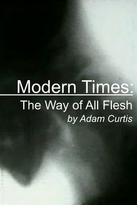
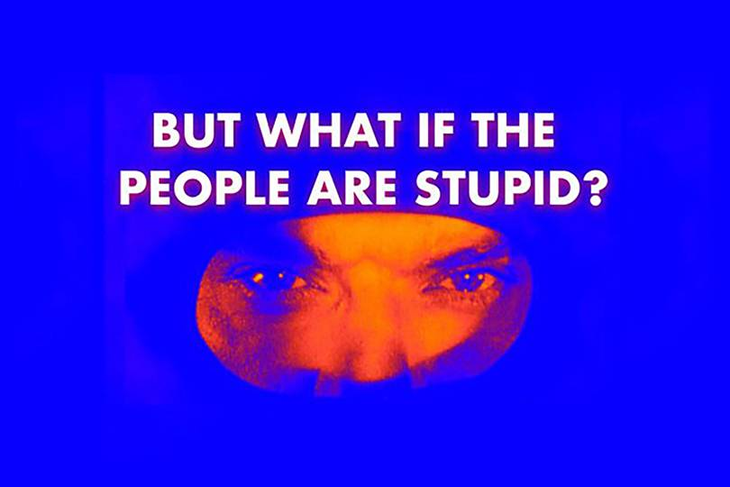
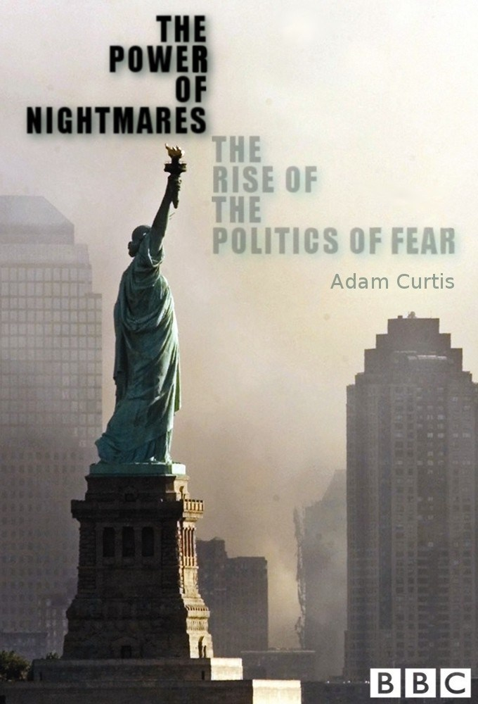

Adam Curtis, as seen is this picture, looks rather mild, he has that kind of middle England jovial quality, that sort of Pimms and Pimlico air, that genteel spirit that comes with the contented life, but not all things are what they seem.
At the very heart of his documentary work is a kind of sprawling surveyance, capturing every nuance of the enfeebled mind and traceing it back to some dark, deliberate plan.The themes of power and people's struggle against it become very real and at times disconcerting, like struglling up a hill to only find a mountain or falling down a well to only discover an abyss.
There is a strange comfort in watching his work, the mad dogs of the mind where not so mad after all, and the pervading injustices that seem now as though a scene on a reel, become likening connections between far off humans.Each chattering, mad, poor soul's poured like endless drips into a sea of struggle, somehow survive the serpentine scythe.
And Adam, well he goes on, bludgeoning the mind with that sharp edged realism that only comes of something you know to be true, for in every meek and soft mannered heart there is a craven beast that knows its own distortions well, and only lays hidden by the soporific inclinations of comfort.
Picking at the seams, each torn scene delivers a new reminder and in it an exclamation that we as people are merely flank and flannel, draped over a conspiring sense of society like a gauze fused to the skin, hiding all the dark blemishes of our mangled mortal throne.
It is this sense of derailment, conjured up in the watcher that allows for a brief sense of reflection, like a victim transformed into a witness, all the bare bones of our inducement are splaid across the screen in an unending riot of malfeasance.Top ten documentaries
10 . All Watched Over By Machines of Loving Grace

In this series we are brought to the forefront of the old world ideas colliding with a new and unexplored technological advancement, those that won the battle to create the output would become the masters of peoples minds, twisting reality to create everlasting want and fear.
9 . The way of all flesh
ciggaretes and silk campaigns, holy eyes and vices maim, you belong to life it's claimed, while struggling with vices chains. This, the flesh, the old soft skin, reverberates like a violin, while the inside dines in a dying din, and times just lines up for a fireing.
8 . Can't get you out of my head 1-3
 .
.
In his new documentary, Adam Curtis argues humanity’s worst enemy is itself. 'Can't Get You Out Of My Head' suggests our innate flaws are what's holding society back.
7 . Can't get you out of my head 4-6
Love, power, money, ghosts of empire, conspiracies, artificial intelligence – and You. An emotional history of the modern world by Adam Curtis.
6 . The trap part 2

In this film Adam Curtis explores the rise of political idologies around the world that gave rise to power struggles that would polarise the world for years too come, and create a vacuum for insideous ideas.
5 . The trap part 1

The series consists of three 60-minute programmes which explore the modern concept and definition of freedom, specifically, "how a simplistic model of human beings as self-seeking, almost robotic, creatures led to today's idea of freedom."
4 . The power of nightmares 2
The Power of Nightmares. Adam Curtis explores how the illusory threat of a hclassden network of terror has come to dominate global politics, with fake fear and distracting fixations.
3 . The power of nightmares part 1
.jpg)
In this film Adam Curtis explores the rise of political idologies around the wrold that gave rise to power struggles that would polarise the world for years too come, and create a vacuum for insideous ideas.
2 . Bitter Lake
.jpg)
Bitter Lake is a new, adventurous and epic film by Adam Curtis that explains why the big stories that politicians tell us have become so simplified that we can't really see the world any longer. The narrative goes all over the world, America, Britain, Russia and Saudi Arabia - but the country at the heart of it is Afghanistan.
1 . HyperNormalisation
.jpg)
HyperNormalisation is a 2016 BBC documentary by British filmmaker Adam Curtis. It argues that governments, financiers, and technological utopians have, since the 1970s, given up on the complex "real world" and built a simpler "fake world" run by corporations and kept stable by politicians. The film was released on 16 October 2016 on the BBC iPlayer.